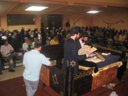

Ing. Alberto Zilberstein Toruncha
President
Alberto
Fernández Barrocas
1st Vice-President
Lic.
Salomón Susi Sarfati
2nd Vice-President
Ing.
Juan Luis Rousso Altuna
Administrator
Dr.
Jose Zilberstein Toruncha
Vice-Administrator
Yacob
Berezniak Hernandez
Treasurer
Tec.
Roberto Behar Mechulam
Vice– Treasurer
Raul
Vasquez Babani
Secretary
Jacobo
Mizrahi Chipruth
Vice - Secretary
Vocales:
Dr.
Pablo Corrales Susi
Daniel
Asquenazí Maya
Jacobo
Lipinsky Kosansky

|
Historical
Calendar
and festivities
The
Jewish festivities all have a special meaning in
the history of the Jewish town, in Adath Israel celebrates
it with its traditional foods and the typical simja of the
Jewish soul. Either Purim where we read Esther's meguila,
or sukot where we distinguish the four type of jews or in
Pesaj where we eat the Matza Smurah, making of each party
a memory that is engraving in our hearts. They are carried
out in our synagogue activities for outstanding dates of
the modern world among them: the woman's international day,
where each woman of our synagogue receives a bouquet of
flowers, a gift and the most important thing a recognition
from all with a small but deep cultural activity. We
also take place with activities of the same nature: the
day of the mothers, the parents and the children. Other
activities also carry out for the anniversary of independence
of Israel and in recall of the 6 million Jews that were
it kills of the Holocaust.
|
Preparations
for Pesach |
|
|
Purim
|
|
 |
Activities conducted by the women of Adath Israel
|
|
|
|